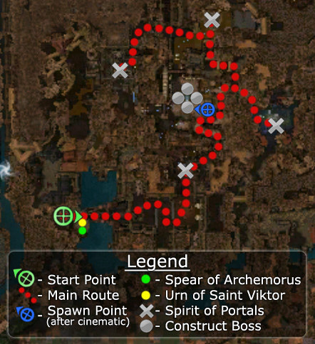

Elite: Hundred Blades
M8
Sunjiang District
◉ Mission Map

Click to enlarge · Local cache · Wiki
Summary (click to expand)
Prevent Shiro from summoning his spirit army!
Region: Kaineng City · Mission: 8 of 13 · Type: Cooperative
✓ Objectives
→ Walkthrough
The objective of the mission is to destroy four Spirit Rifts (energy spheres) and defeat four Shiro's Constructs. Kill the guarding Spirit of Portals to close the Spirit Rift. These guards also summon more Shiro'kens to replace fallen ones.
At the beginning, the party has access to the Spear of Archemorus and the Urn of Saint Viktor. These tools are provided as boosts only and carrying them is not required to complete the mission. If your party consists mainly of heroes and can only take one of the bundles, consider taking the Spear instead of the Urn, since heroes are not affected by the Urn's effect.
A bridge will come down and the mission will start.
- The first area has Flame Fissures that cause burning and crippled to anyone who walks over them. The first Spirit Rift and Shiro'ken Assassins will be there. The party can now proceed either left or right. If taking right, Shiro can be sighted but will be unreachable at this time.
- There is another fork ahead. The second Spirit Rift and Shiro'ken Rangers will be to the right. This area has several spikes squares that cause bleeding and crippled when walked over. Pull carefully to avoid over-aggro.
- The party should double back to the previous fork. The third Spirit Rift and Shiro'ken Necromancers will be down that path atop a small hill surrounded with poisoned water.
- Turn right and out of the poisoned water to find the fourth and final Spirit Rift and Shiro'ken Warriors. The spike plates in this area cause dazed, casters should be careful.
After the fourth Spirit of Portals and its mob are destroyed, a cinematic will play and then the party will be in the central area where Shiro was previously seen, facing four Construct bosses. Finish off all four to complete the mission. If you are playing with henchmen/heroes, immediately flag them to the nearest corner as they tend to run to the center between all bosses, causing a quick wipe. Then slowly pull the bosses one or two at a time.
★ Bonus
See walkthrough and objectives for bonus details (if any).
◆ Hard Mode
No dedicated Hard Mode section on the wiki — expect tougher foes and adjusted mechanics. See walkthrough notes.
☠ Bosses & Elites
Elite: Equinox
Elite: Life Sheath
Elite: Soul Bind
Elite: Psychic Distraction
Elite: Mirror of Ice
Elite: Temple Strike
Elite: Soul Twisting
✦ Tips & Notes
Skill recommendations
- Spirit of Portals can be defeated quickly by using Gaze of Fury on them.
- Enchantment-based builds are vulnerable to enchantment removal by Afflicted Necromancers and Mesmers. Afflicted that deal physical damage can also remove enchantments when enchanted with Afflicted Necromancer's Order of Apostasy.
Notes
- This mission's environment traps also affect enemies.
- Shiro Tagachi is passive and has Invulnerability in this mission; however, allied minions that wander into his aggro circle will still attempt to engage him in combat. He may be killed by means such as Agony and Unholy Feast, but doing so appears to have no effect on the mission besides preventing him from speaking his lines. In the cinematic after closing all the rifts, he appears as normal.
- This mission does not provide a reliable opportunity to capture skills, because you have to go through the entire mission to reach the bosses, only four of eight potential bosses spawn, and there is very little time to capture the skill of the fourth-defeated boss.
- After completing the mission for the first time, the sectioned off area of Sunjiang District (explorable area) will be accessible, and in turn so will the six construct bosses.
- Completion of this mission will fill in page #6 of the Shiro's Return storybook.
- After completing this mission, your party will be taken to Maatu Keep.